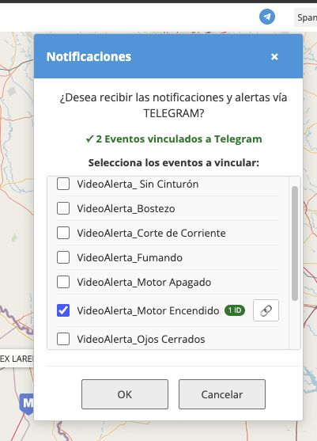
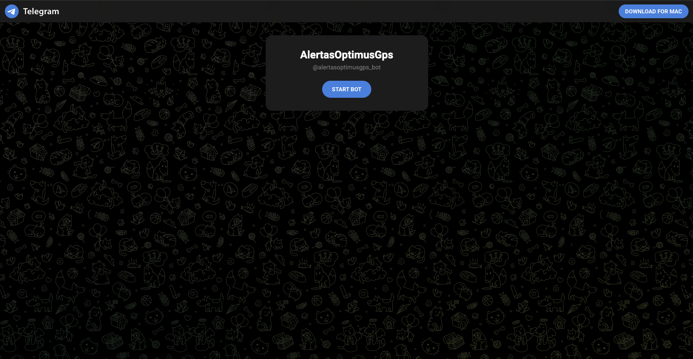
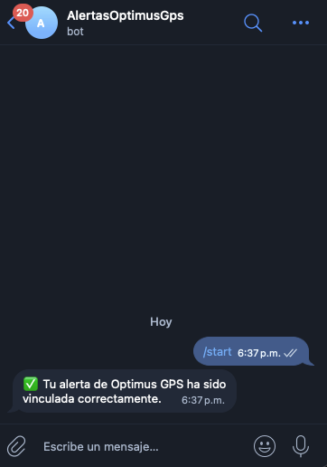
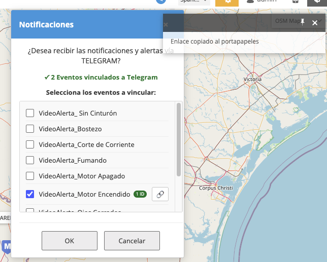
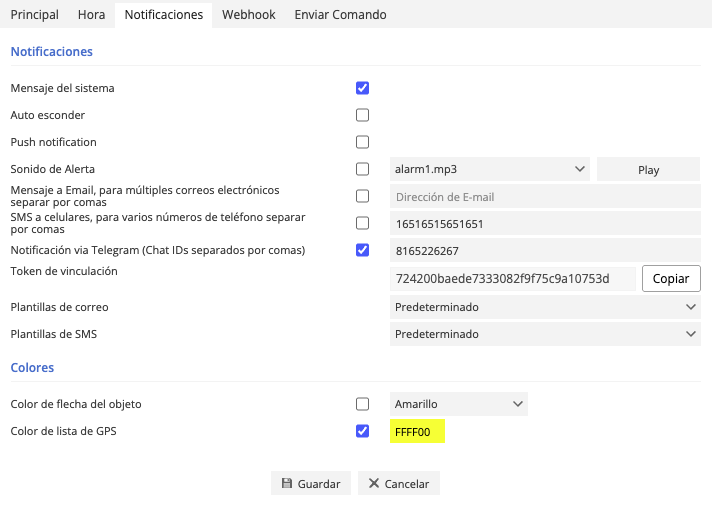

Guía paso a paso para recibir notificaciones en tiempo real directamente en tu teléfono, sin importar si nunca has usado Telegram.
Telegram es una aplicación de mensajería gratuita disponible para Android, iPhone y computadora. A diferencia de los SMS, Telegram es gratuito, llega al instante y funciona con tu conexión a internet (WiFi o datos móviles).
Al vincularlo con Optimus GPS, recibirás en tu celular un mensaje cada vez que se active una alerta de tu vehículo: motor encendido, exceso de velocidad, salida de zona, entre otras.
Para recibir las notificaciones debes tener instalada la app de Telegram. Puedes usarla tanto en tu teléfono como en tu computadora.
Primero, instala Telegram en tu teléfono y crea tu cuenta: App Store / Google Play
Para completar la vinculación desde este sistema, también puedes instalar Telegram en tu computadora según tu sistema operativo:
También puedes usar Telegram Web si no deseas instalar la aplicación: https://web.telegram.org/
Una vez instalado, abre el bot y presiona Start para activar las notificaciones.
En la barra superior del mapa, haz clic en el ícono azul de Telegram (✈). Se abrirá un panel con la lista de tus alertas configuradas.

Marca la casilla de cada alerta que quieras recibir por Telegram. Puedes seleccionar una o varias al mismo tiempo.
Al presionar OK, el sistema generará automáticamente un enlace de vinculación único para cada alerta seleccionada. Serás redirigido al bot de Telegram con el enlace del último evento seleccionado.
El sistema solo te redirige automáticamente al enlace del último evento. Para vincular los demás, regresa al panel y usa el botón 🔗 que aparece al lado de cada evento. Los eventos que aún no están vinculados no tendrán la casilla marcada, pero sí mostrarán el botón de copiar enlace. Copia ese enlace y ábrelo en Telegram para completar la vinculación de cada uno.
Se abrirá Telegram con el bot @alertasoptimusgps_bot. Verás un botón azul que dice "START BOT" o "INICIAR". Haz clic en él.

/start en el chat del bot.
Si todo salió bien, el bot responderá con el mensaje: ✅ Tu alerta de Optimus GPS ha sido vinculada correctamente.

A partir de este momento, cada vez que se active esa alerta en tu vehículo, recibirás un mensaje directo en Telegram.
El bot no procesa respuestas de tu parte. Si contestas un mensaje, no recibirás ninguna respuesta. El único propósito de este chat es enviarte notificaciones automáticas cuando se activen tus alertas.
Si quieres que otra persona también reciba esa alerta (por ejemplo, un familiar o empleado), usa el botón 🔗 que aparece al lado del evento en el panel. Esto copiará el enlace de vinculación para que lo puedas enviar por WhatsApp, correo o cualquier otro medio.

Puedes confirmar la vinculación de dos formas:
1. Desde el panel flotante: El evento aparecerá con la casilla marcada y el badge verde con el número de IDs vinculados.
2. Desde las propiedades del evento: Abre las propiedades del evento (clic derecho → Propiedades), ve a la pestaña Notificaciones. Verás el Chat ID del dispositivo vinculado y el token de vinculación.

El bot responde: "✅ Tu alerta de Optimus GPS ha sido vinculada correctamente."
El panel muestra el evento con casilla marcada y badge 1 ID.
Compartes el enlace con 3 personas. El badge muestra 3 IDs. Todos reciben la alerta al mismo tiempo cuando se activa.
Esto ocurre cuando el token que se envió al bot no coincide con el guardado en el sistema. Solución: regresa al panel, selecciona el evento y vuelve a hacer clic en OK para generar un nuevo enlace.
Puede ser un problema de conexión. Verifica que tienes internet activo y vuelve a intentarlo. Si el problema persiste, cierra Telegram y vuelve a abrirlo.
Asegúrate de presionar el botón "START BOT" o escribir /start en el chat.
Solo abrir Telegram no es suficiente; debes iniciar la conversación con el bot.
Al vincular por Telegram, el sistema desactiva el SMS automáticamente. Si aún llegan SMS, abre las propiedades del evento, ve a Notificaciones y desmarca manualmente la casilla de SMS, luego guarda.
Si después de seguir esta guía sigues teniendo problemas, contacta a nuestro equipo de soporte. Proporciona el nombre del evento y el mensaje exacto que muestra el bot.
Departamento de Soporte Técnico y Sistemas